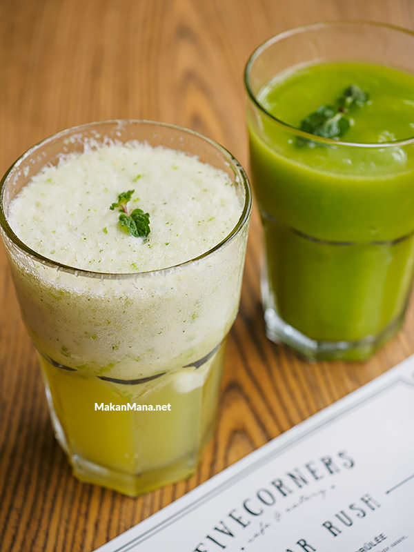

Ismud, singkatan dari Iskandar Muda. Tempat nongkrong baru yang bernama Ismud Park ini sudah jelas beralamat di Jalan Iskandar Muda, beberapa meter di seberang Medan Plaza. Dari luar, design cafe ini tampak menyolok. Unik memang, karena konstruksi bangunan dan interior terinspirasi berat dari container yang sering nampak di pelabuhan.
Walau dari luar tampak seperti ‘just another cafe’, pemakaian kata ‘park’ ini memberi arti tersendiri. Ismud Park ini ibarat sebuah marketplace, dimana terdiri dari beberapa tenant yang berjualan di dalam.
Per kunjungan kami yang masih tergolong soft opening, ada 3 tenant yang menduduki Ismud Park—Five Corners Cafe and Bar, Martabak Buddy, dan Monjardin yang menawarkan french patisseries. Sayangnya kedua outlet terakhir ini belum buka.
Areal lantai 1 ditata meja kursi dan sofa dengan open space ambience, dengan atap transparan sehingga pencahayaannya alami. Sayangnya air flow disini kurang maksimal sehingga terasa gerah apabila matahari terik.
Ismud Park terdiri dari 2 lantai, dimana kita duduk makan/mejeng di dalam container. Nah, buat yang takut gerah, interior di dalam container dilengkapi AC.
Di lantai 2 ini juga tersedia smoking area yang berada di sisi lain yang dapat diakses melalui sebuah ‘jembatan’.
Crispy Tempeh Sliders (40rb).
Crispy Tempeh Sliders, tempeh goreng tepung dioles sambal dan dibalut roti bun dengan sayuran dan french fries sebagai side dish.
The flavor was good, but it’s too fulfiling. 2 biji tempeh dalam 1 bun memang keliatan banyak, tapi setelah melahap satu bun, langsung terasa eneg. Disarankan pesan buat sharing.
Kimchi Fried Rice (45rb).
Nasi goreng mungkin menu yang ‘wajib ada’ di setiap cafe karena demand yang populer. Tetapi rata-rata penampilan nasi goreng di cafe itu sama, either make it ‘special’ or ‘Nasi goreng khas [insert cafe name here]’.
We were impressed with Kimchi Fried rice from Five Corners. Platingnya menarik dengan nasi goreng di base, lalu ditumpuk spinach salad, spicy korean chicken dan telur mata sapi diatasnya. Not a typical nasi goreng scenery.
Flavor? Surprisingly good. Aroma dan citarasa kimchi berbaur dengan baik di nasi goreng. Ada sedikit tekstur chopped kimchi didalamnya. Ayam gorengnya sedikit pedas dan flavornya intense, namun kombinasi bayam, telur mata sapi berhasil meredam dan menciptakan well balanced meal. Recommended.
Chili Crab Pasta (65rb).
Makanan yang terakhir keluar siang itu ialah Chili Crab Pasta. Terinspirasi dari Singapore Chili Crab, saos yang populer itu difusion ke pasta, kemudian dilengkapi dengan daging kepiting.
Hidangan ini unik, namun harus diakui flavornya belum kena. Mungkin karena tidak menggunakan kepiting yang dimasak bareng untuk mendapatkan essence nya? Ah, mungkin saja dengan harga jual 65rb, harus ada sedikit kompensasi disini.
Saosnya kurang banyak. Imagine makan Chili Crab di Singapore dengan saos sedikit itu, pasti rage mode on. Tapi, bisa jadi hidangan ini hanya interpretasi Chef dalam kreasinya.
Green Booster (28rb) & Doctor’s Order (28rb).
Minuman disini juga diberi nama yang unik. Campuran Jus bok choy nenas mangga ini dinamakan Green Booster, dan campuran Jus apel oren lime mint diberi nama Doctor’s order, dengan slogan ‘An apple a day keeps the doctors away, now add orange, lime, mint, and this will be all the medicine you need for a warm day’. Indeed refreshing on hot day.

Fancy beverages name that succesfully upsell the price. Harga minuman disini berkisar antara 28rb hingga 35rb.
Sebagai establishment baru, review ini sebenarnya masih terlalu preliminary. Kami yakin masih banyak yang masih dibenah manajemen. So, don’t put very high expectation yet. Enjoy the ambience, enjoy the food and order what the doctor told you.
Ismud Park
Jalan Iskandar Muda no 132
Telepon: 061-414 1197